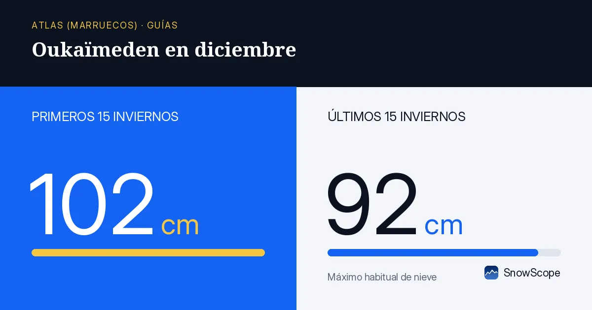

Oukaïmeden en diciembre: tus probabilidades reales de nieve, según 46 inviernos
Diciembre en Oukaïmeden es una lotería. Un mid-diciembre típico ofrece solo 16 cm a media montaña (2929 m), y solo el 11 % de los inviernos han construido una base de 50 cm para entonces. Planifica alrededor de tormentas, no del calendario.
Consulta la previsión de nieve en tiempo real de Oukaimden ski resort en la app SnowScopeEspesor de nieve, alertas de nieve polvo y mapa 3D, gratis.
La altitud importa menos de lo que crees aquí
Oukaïmeden se sitúa en lo alto del Atlas, con pistas que van desde 2600 m en la base hasta 3258 m en la cima. En diciembre las tres zonas están sorprendentemente cerca: el 15 de diciembre un invierno típico da 15 cm en la base, 16 cm a media montaña y 17 cm en la cima. El Atlas no recompensa la altitud de la misma manera que lo hacen las cordilleras europeas.
La primera nieve duradera suele llegar cerca del 5 de noviembre, pero va y viene. Muchas caídas de noviembre desaparecen en días.

Los números por fecha
Principios de diciembre es delgado: el 1 de diciembre, un invierno típico está en 12 cm a media montaña, y el 28 % de los inviernos están casi pelados (menos de 5 cm). Dos semanas después (15 de diciembre) tienes 16 cm en un invierno promedio, el 20 % sigue casi pelado, y el 43 % con al menos 25 cm. Navidad trae 20 cm y el 41 % de los inviernos a 25 cm o más. Para Fin de Año, 24 cm es típico y la mitad de todos los inviernos ha cruzado los 25 cm.
La marca de 50 cm—una base de esquí real—rara vez llega a mediados de diciembre a media montaña: solo el 11 % de los inviernos. Llega más a menudo para el 31 de diciembre (15 %) e incluso más a menudo en la cumbre (15 %, luego 20 % a fin de año).

Qué semana podría funcionar
Si estás cazando una semana donde la nieve promedio alcanza 50 cm a media montaña, las probabilidades son escasas. Solo el 4 % de los inviernos lo ven en la última semana de noviembre hasta el 6 de diciembre, el 13 % en la segunda semana de diciembre, el 11 % en la tercera y el 13 % en la cuarta. Ninguna semana es garantizada. Un solo buen fin de semana después de una tormenta es mucho más probable que una semana completa de nieve profunda.
El mejor seguro es vigilar el pronóstico e ir dentro de días de una tormenta. Principios de diciembre rara vez entrega; finales de diciembre es tu mejor apuesta.
Cuando un gran diciembre ocurre
Uno de cada diez inviernos trae un diciembre generoso: 50 cm a media montaña el 15 de diciembre y 53 cm en Navidad. El invierno pasado (2025-26) probó que esto es posible. Comenzó modesto—33 cm a media montaña el 15 de diciembre—pero luego subió bruscamente a 78 cm el Día de Navidad, eventualmente alcanzando un pico de 132 cm durante la temporada con 149 días de nieve.
A largo plazo, diciembre no ha cambiado mucho. La nieve típica a mediados de diciembre a media montaña era 14 cm en inviernos 1980-81 a 1994-95 y 11 cm en inviernos 2011-12 a 2025-26. En ambas épocas, el 40 % de los inviernos subieron por encima de 25 cm para esa fecha. Diciembre es tan impredecible ahora como lo ha sido durante cuatro décadas.
Lo que enfrentas a mediados de noviembre
El 13 de noviembre de 2026, nuestro mapa de nieve mostró 0 cm en todas las tres elevaciones. No se esperaba nieve en la semana siguiente. Esto no es inusual para mediados de noviembre. La temporada del Atlas alcanza su pico en marzo, cuando media montaña típicamente sostiene 53 cm. Noviembre y diciembre son meses de construcción. Los esquías cuando llegan las tormentas, no por calendario.
Lleva capas, revisa el pronóstico diariamente y reserva fechas flexibles. Oukaïmeden recompensa la paciencia más que la planificación.
Consejos para esquiadores
- No reserves un viaje en diciembre semanas antes: espera un pronóstico de tormenta, luego ve en los dos o tres días después de que pase.
- Revisa el mapa SnowScope la mañana antes de viajar; una sola tormenta puede convertir una pista pelada en un día de esquí.
- La nieve de principios de temporada es delgada y rocas yacen debajo: mantente en pistas acondicionadas y pregunta a la estación qué pistas están abiertas.
- Diciembre es una apuesta aquí; febrero y marzo son más seguros si quieres nieve profunda garantizada, pero requieren una visita más larga a la región.
Sobre estas cifras
Los espesores de nieve de las estaciones son la nieve más profunda en las pistas altas en la fecha indicada; son estimaciones para una zona, no una medida en un punto. Las previsiones pueden cambiar. Consulta siempre el boletín oficial de aludes antes de salir fuera de pista.
Citar este informe
Para investigación, docencia o prensa: cifras y gráficos reutilizables libremente bajo CC BY 4.0 con esta cita.
SnowScope (2026), Oukaïmeden en diciembre: tus probabilidades reales de nieve, según 46 inviernos, https://snowscope.app/blog/es/2026/11/oukaimeden-decembre-chances-de-neige-46-hivers.html, consultado el 2026-11-14
SnowScope (Atlas Labs). (2026, November 14). Oukaïmeden en diciembre: tus probabilidades reales de nieve, según 46 inviernos. SnowScope snow reports. https://snowscope.app/blog/es/2026/11/oukaimeden-decembre-chances-de-neige-46-hivers.html
BibTeX
@misc{snowscope2026oukaimedendecembrechance,
author = {{SnowScope (Atlas Labs)}},
title = {Oukaïmeden en diciembre: tus probabilidades reales de nieve, según 46 inviernos},
year = {2026},
month = nov,
howpublished = {\url{https://snowscope.app/blog/es/2026/11/oukaimeden-decembre-chances-de-neige-46-hivers.html}},
note = {Published 2026-11-14 13:29 UTC; accessed 2026-11-14}
}· CC BY 4.0 · Métodos, datos y herramientas →
Sigue Oukaimden ski resort
Gratis: un aviso cuando llega la nieve y la previsión cada mañana.
Más partes de nieve

Un cuaderno práctico sobre Oukaïmeden, en el Alto Atlas: cuándo suele llegar la nieve, cuánta, qué laderas elegir y cómo llegar desde Marrakech.

Sin nieve aún en Oukaïmeden el 12 de noviembre. Las cimas del Atlas están desnudas; la temporada de invierno alcanza típicamente su pico en marzo con 58 cm en la cima.